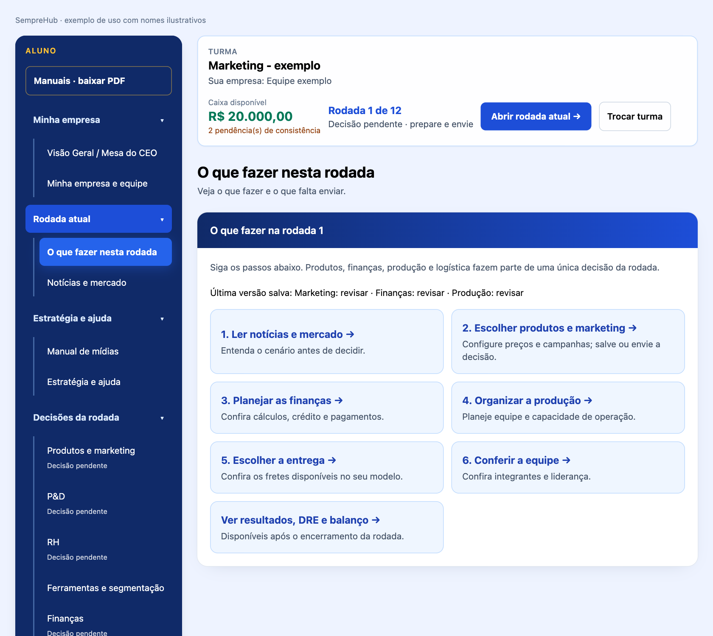

Autoria e criação: Professor Guandalini. A marca, o nome e a identidade visual foram idealizados e criados pelo Professor Guandalini para unir o ambiente corporativo à conexão das redes modernas. O símbolo representa uma metodologia de aprendizado viva e integrada, voltada ao Ensino Médio e Superior.
SEMPRE evoca constância, aprendizado contínuo e resiliência: empreender exige tentativas, análise dos relatórios, ajustes e evolução. HUB representa um centro conector de inteligência, onde estudantes, mercado competitivo e gestão se encontram.
A rede de decisões. Os nós azuis e cianos representam os seis departamentos: P&D, Produção, Logística, Marketing, RH e Finanças. As linhas mostram que nenhuma decisão é isolada: mudar a Produção afeta a Logística e as Finanças. Os dois núcleos em Laranja Ouro representam a tomada de decisão do estudante e a dinâmica do mercado.
Paleta oficial da identidade visual: Azul Royal #034AA6 e Azul Absoluto #0762D9 transmitem credibilidade e robustez; Ciano/Turquesa #0AADBF representa dinamismo e modernidade; Laranja Ouro #D9851E destaca geração de valor, criatividade e atitude empreendedora; Cinza Soft #F2F2F2 organiza um fundo limpo para a leitura.
O Azul Profundo #0B2545 e o Ouro Fosco #C5A059 permanecem documentados como paleta institucional anterior. A identidade visual atual segue os códigos oficiais apresentados pelo fundador.
O menu lateral é o ponto de partida. Suas categorias e submenus aparecem abertos inicialmente. Você pode recolher uma categoria para organizar a tela e abri-la novamente quando precisar. O submenu selecionado fica destacado, e o conteúdo aparece no painel à direita. Em telas estreitas, o menu permanece disponível acima do conteúdo e possui rolagem própria.
1. Localize no menu o assunto desejado.
2. Clique uma vez no submenu. Não é necessário abrir outra janela para tomar decisões.
3. Confira o título do painel à direita antes de alterar qualquer valor.
4. Ao terminar, salve o rascunho, avance ou envie conforme a etapa.
5. Para estudar, abra Manuais - baixar PDF. Use Visualizar para consultar ou Baixar PDF para guardar uma cópia.

Os campos de decisão mostram pendências, como Falta tomar esta decisão ou Falta confirmar esta decisão. Eles não substituem este manual. A confirmação de uma área significa que a equipe conferiu todos os seus campos, incluindo a decisão de manter em zero ações opcionais. Um aviso de campo vazio continua pendente mesmo depois de marcar a revisão. Os estados do menu referem-se à última versão salva; valores ainda não salvos precisam ser registrados.
1. Leia a segmentação escolhida pela equipe. O público e a região vêm antes da mídia.
2. Abra Produtos e marketing no menu lateral e localize o produto.
3. Escolha o formato de mídia, confira sua unidade e informe a quantidade.
4. Confira o serviço de produção ou execução necessário. Mídia e serviço podem ser despesas diferentes.
5. Quando o preço estiver sob consulta, informe orçamento e referência conforme solicitado; sem isso a decisão pode permanecer incompleta.
6. Confira o total, a margem e o caixa antes de revisar o mix e salvar.
Exemplo didático: uma tarifa por inserção multiplicada por três representa três inserções. Uma tarifa por mil exibições com quantidade três representa três lotes de mil exibições, não três mil compradores. Se houver produção, some o serviço conforme a regra do catálogo. Não multiplique taxas sem verificar a unidade.
Escolher zero é uma decisão possível quando a equipe não deseja contratar uma ação opcional. Comprar publicidade sem demanda, margem ou capacidade suficiente pode comprometer a empresa. A audiência não é venda garantida.
Mídia: meio ou espaço de divulgação. Peça: material produzido, como arte ou vídeo. Inserção: ocorrência de um anúncio. Impressão: exibição registrada. Alcance: pessoas distintas alcançadas quando essa medida estiver disponível. Conversão: ação desejada, que pode ser uma compra ou outra ação definida. Orçamento: valor previsto para contratar o escopo.
Compare o escopo, a unidade e o total, não apenas o número ao lado do preço. Uma peça produzida sem veiculação não compra audiência. Um pacote de veiculação pode não incluir produção. Uma referência publicada não garante o preço final de um fornecedor.
O catálogo a seguir preserva os formatos, unidades, tarifas didáticas e referências de serviço já documentados. Valores de fontes possuem as datas de consulta indicadas e não devem ser tratados como cotação atual. Confira a edição e o escopo vigentes na turma antes de decidir. As imagens do programa e os exemplos do manual do aluno complementam o uso deste catálogo.
| Componente | Leitura correta |
| Mídia / pacote | Quantidade × tarifa original do jogo. Tarifas preservadas; não são preços comerciais atuais de veiculação. |
| Produção / serviço | Criação de arte, filme, áudio, gestão ou execução física. Referência pública com fonte e escopo; preços iniciais não são cotações personalizadas. |
| Orçamento sob consulta | Serviços sem preço público exato validado exigem valor e link do fornecedor. A equipe informa a cotação; o sistema não a verifica automaticamente. |
| Total | Mídia + serviços precificados + orçamento informado. Uma única despesa de marketing na DRE e no caixa. |
Produção é cobrada por formato, produto e mês, sem repetir a taxa por inserção. Materiais físicos dependem da quantidade. Reutilização de peças entre meses, cachês especiais e direitos irrestritos não são presumidos. A mesma referência serve a professor e aluno.
| Indicador | O que mede | O que não demonstra |
| CPM | Custo por mil impressões/exibições | Mil pessoas diferentes ou mil compradores. |
| Alcance único | Pessoas distintas expostas | Impressões acumuladas; uma pessoa pode ver várias vezes. |
| Frequência | Impressões / alcance, quando ambos são conhecidos | Conversão em venda. |
| CPC | Custo por clique | Compra concluída. |
| CPV | Custo por visualização conforme a regra da plataforma | Cliente adquirido. |
| Conversão / CPA | Ação concluída / custo por aquisição | Retorno positivo sem comparar margem e gasto. |
Quantidade 10 em uma linha de CPM significa 10 lotes de mil exibições, não 10 mil clientes. Não inferir alcance único a partir da verba. Target e praça são hipóteses a validar com o perfil da audiência; idade/renda não são propriedades universais de uma mídia.
Anúncio que ocupa uma página inteira de jornal. Dá espaço para uma mensagem detalhada e alcance no público leitor.
| Ativo / despesa | Valor | Unidade / regra |
| Mídia / pacote original | R$ 8.500,00 | inserção |
| Criação e fechamento da arte impressa | R$ 850,20 | Por formato, produto e mês |
| Subtotal precificado · 1 unidade de mídia | R$ 9.350,20 | Acrescentar orçamento sob consulta quando exigido |
Praça / público: Públicos locais ou temáticos; mensagem informativa e presença visual.
Escopo: A tarifa original do jogo remunera o espaço/pacote descrito, não uma cotação universal de campanha completa.
Criação e fechamento da arte impressa: Uma peça no formato contratado. Fração considera 1/4 de página. Tabela pública sem data de vigência informada; referência para o exercício. Preço publicado de referência; contratação real sujeita ao escopo e orçamento. Fonte: Tabela de serviços Be It · documento público · consulta 07/10/2026.
Anúncio em metade de uma página de jornal. Permite combinar informação e presença com custo menor que a página inteira.
| Ativo / despesa | Valor | Unidade / regra |
| Mídia / pacote original | R$ 4.500,00 | inserção |
| Criação e fechamento da arte impressa | R$ 780,90 | Por formato, produto e mês |
| Subtotal precificado · 1 unidade de mídia | R$ 5.280,90 | Acrescentar orçamento sob consulta quando exigido |
Praça / público: Públicos locais ou temáticos; mensagem informativa e presença visual.
Escopo: A tarifa original do jogo remunera o espaço/pacote descrito, não uma cotação universal de campanha completa.
Criação e fechamento da arte impressa: Uma peça no formato contratado. Fração considera 1/4 de página. Tabela pública sem data de vigência informada; referência para o exercício. Preço publicado de referência; contratação real sujeita ao escopo e orçamento. Fonte: Tabela de serviços Be It · documento público · consulta 07/10/2026.
Página completa em revista. Útil para públicos ligados ao tema da publicação e para apresentar atributos visuais do produto.
| Ativo / despesa | Valor | Unidade / regra |
| Mídia / pacote original | R$ 12.000,00 | inserção |
| Criação e fechamento da arte impressa | R$ 850,20 | Por formato, produto e mês |
| Subtotal precificado · 1 unidade de mídia | R$ 12.850,20 | Acrescentar orçamento sob consulta quando exigido |
Praça / público: Públicos locais ou temáticos; mensagem informativa e presença visual.
Escopo: A tarifa original do jogo remunera o espaço/pacote descrito, não uma cotação universal de campanha completa.
Criação e fechamento da arte impressa: Uma peça no formato contratado. Fração considera 1/4 de página. Tabela pública sem data de vigência informada; referência para o exercício. Preço publicado de referência; contratação real sujeita ao escopo e orçamento. Fonte: Tabela de serviços Be It · documento público · consulta 07/10/2026.
Anúncio nas duas páginas abertas do jornal. Prioriza impacto visual e visibilidade.
| Ativo / despesa | Valor | Unidade / regra |
| Mídia / pacote original | R$ 9.000,00 | inserção |
| Criação e fechamento da arte impressa | R$ 1.200,00 | Por formato, produto e mês |
| Subtotal precificado · 1 unidade de mídia | R$ 10.200,00 | Acrescentar orçamento sob consulta quando exigido |
Praça / público: Públicos locais ou temáticos; mensagem informativa e presença visual.
Escopo: A tarifa original do jogo remunera o espaço/pacote descrito, não uma cotação universal de campanha completa.
Criação e fechamento da arte impressa: Uma peça no formato contratado. Fração considera 1/4 de página. Tabela pública sem data de vigência informada; referência para o exercício. Preço publicado de referência; contratação real sujeita ao escopo e orçamento. Fonte: Tabela de serviços Be It · documento público · consulta 07/10/2026.
Anúncio em duas páginas abertas de revista. Permite uma composição visual ampla para uma campanha de marca.
| Ativo / despesa | Valor | Unidade / regra |
| Mídia / pacote original | R$ 12.500,00 | inserção |
| Criação e fechamento da arte impressa | R$ 1.200,00 | Por formato, produto e mês |
| Subtotal precificado · 1 unidade de mídia | R$ 13.700,00 | Acrescentar orçamento sob consulta quando exigido |
Praça / público: Públicos locais ou temáticos; mensagem informativa e presença visual.
Escopo: A tarifa original do jogo remunera o espaço/pacote descrito, não uma cotação universal de campanha completa.
Criação e fechamento da arte impressa: Uma peça no formato contratado. Fração considera 1/4 de página. Tabela pública sem data de vigência informada; referência para o exercício. Preço publicado de referência; contratação real sujeita ao escopo e orçamento. Fonte: Tabela de serviços Be It · documento público · consulta 07/10/2026.
Espaço pequeno, como um quarto de página ou rodapé de jornal. Adequado a mensagens curtas e ofertas locais.
| Ativo / despesa | Valor | Unidade / regra |
| Mídia / pacote original | R$ 450,00 | inserção |
| Criação e fechamento da arte impressa | R$ 580,90 | Por formato, produto e mês |
| Subtotal precificado · 1 unidade de mídia | R$ 1.030,90 | Acrescentar orçamento sob consulta quando exigido |
Praça / público: Públicos locais ou temáticos; mensagem informativa e presença visual.
Escopo: A tarifa original do jogo remunera o espaço/pacote descrito, não uma cotação universal de campanha completa.
Criação e fechamento da arte impressa: Uma peça no formato contratado. Fração considera 1/4 de página. Tabela pública sem data de vigência informada; referência para o exercício. Preço publicado de referência; contratação real sujeita ao escopo e orçamento. Fonte: Tabela de serviços Be It · documento público · consulta 07/10/2026.
Espaço pequeno em revista. Dá presença em um público temático sem comprar uma página inteira.
| Ativo / despesa | Valor | Unidade / regra |
| Mídia / pacote original | R$ 650,00 | inserção |
| Criação e fechamento da arte impressa | R$ 580,90 | Por formato, produto e mês |
| Subtotal precificado · 1 unidade de mídia | R$ 1.230,90 | Acrescentar orçamento sob consulta quando exigido |
Praça / público: Públicos locais ou temáticos; mensagem informativa e presença visual.
Escopo: A tarifa original do jogo remunera o espaço/pacote descrito, não uma cotação universal de campanha completa.
Criação e fechamento da arte impressa: Uma peça no formato contratado. Fração considera 1/4 de página. Tabela pública sem data de vigência informada; referência para o exercício. Preço publicado de referência; contratação real sujeita ao escopo e orçamento. Fonte: Tabela de serviços Be It · documento público · consulta 07/10/2026.
Metade de uma página de revista, em formato horizontal ou vertical. Equilibra espaço e custo.
| Ativo / despesa | Valor | Unidade / regra |
| Mídia / pacote original | R$ 6.000,00 | inserção |
| Criação e fechamento da arte impressa | R$ 780,90 | Por formato, produto e mês |
| Subtotal precificado · 1 unidade de mídia | R$ 6.780,90 | Acrescentar orçamento sob consulta quando exigido |
Praça / público: Públicos locais ou temáticos; mensagem informativa e presença visual.
Escopo: A tarifa original do jogo remunera o espaço/pacote descrito, não uma cotação universal de campanha completa.
Criação e fechamento da arte impressa: Uma peça no formato contratado. Fração considera 1/4 de página. Tabela pública sem data de vigência informada; referência para o exercício. Preço publicado de referência; contratação real sujeita ao escopo e orçamento. Fonte: Tabela de serviços Be It · documento público · consulta 07/10/2026.
Produção isolada não compra audiência. Contrate serviços e veiculação necessários; não confunda impressões, alcance único e novos clientes. Escopos especiais e orçamentos informados estão separados das referências públicas.
Parceria paga com criador de conteúdo de até 100 mil seguidores. Pode aproximar a marca de um nicho; avalie aderência e engajamento, não só seguidores.
| Ativo / despesa | Valor | Unidade / regra |
| Mídia / pacote original | R$ 1.200,00 | parceria |
| Subtotal precificado · 1 unidade de mídia | R$ 1.200,00 | Acrescentar orçamento sob consulta quando exigido |
Praça / público: Busca, descoberta ou relacionamento conforme o canal e o estágio de compra.
Escopo: Pacote didático de parceria, incluindo criação pelo influenciador. Direitos de reutilização e envio de produtos podem exigir orçamento adicional.
Parceria com criador de 100 a 500 mil seguidores. Combina alcance e possibilidade de trabalhar públicos temáticos.
| Ativo / despesa | Valor | Unidade / regra |
| Mídia / pacote original | R$ 3.500,00 | parceria |
| Subtotal precificado · 1 unidade de mídia | R$ 3.500,00 | Acrescentar orçamento sob consulta quando exigido |
Praça / público: Busca, descoberta ou relacionamento conforme o canal e o estágio de compra.
Escopo: Pacote didático de parceria, incluindo criação pelo influenciador. Direitos de reutilização e envio de produtos podem exigir orçamento adicional.
Parceria com criador acima de 500 mil seguidores. Busca amplo alcance; audiência grande não garante intenção de compra.
| Ativo / despesa | Valor | Unidade / regra |
| Mídia / pacote original | R$ 8.000,00 | parceria |
| Subtotal precificado · 1 unidade de mídia | R$ 8.000,00 | Acrescentar orçamento sob consulta quando exigido |
Praça / público: Busca, descoberta ou relacionamento conforme o canal e o estágio de compra.
Escopo: Pacote didático de parceria, incluindo criação pelo influenciador. Direitos de reutilização e envio de produtos podem exigir orçamento adicional.
Mensagem enviada a uma lista de contatos com permissão. Útil para relacionamento, recompra e ofertas; não confundir envios com mensagens abertas.
| Ativo / despesa | Valor | Unidade / regra |
| Mídia / pacote original | R$ 0,12 | envio |
| Design do e-mail marketing | R$ 545,00 | Por formato, produto e mês |
| Subtotal precificado · 1 unidade de mídia | R$ 545,12 | Acrescentar orçamento sob consulta quando exigido |
Praça / público: Busca, descoberta ou relacionamento conforme o canal e o estágio de compra.
Escopo: A tarifa original do jogo remunera o espaço/pacote descrito, não uma cotação universal de campanha completa.
Design do e-mail marketing: Desenho de um e-mail, sem HTML. O pacote de envios do jogo fornece a ferramenta com editor visual; programação personalizada não está incluída. Preço publicado de referência; contratação real sujeita ao escopo e orçamento. Fonte: We Do Logos · layout de e-mail marketing · consulta 07/10/2026.
Menção ou anúncio dentro de um episódio de podcast. A seleção do programa deve considerar o tema e o perfil dos ouvintes.
| Ativo / despesa | Valor | Unidade / regra |
| Mídia / pacote original | R$ 800,00 | inserção |
| Subtotal precificado · 1 unidade de mídia | R$ 800,00 | Acrescentar orçamento sob consulta quando exigido |
Praça / público: Busca, descoberta ou relacionamento conforme o canal e o estágio de compra.
Escopo: A tarifa original do jogo remunera o espaço/pacote descrito, não uma cotação universal de campanha completa.
Mensagem curta enviada ao celular. Pode divulgar ofertas ou avisos; exige contatos autorizados e linguagem objetiva.
| Ativo / despesa | Valor | Unidade / regra |
| Mídia / pacote original | R$ 0,10 | envio |
| Subtotal precificado · 1 unidade de mídia | R$ 0,10 | Acrescentar orçamento sob consulta quando exigido |
Praça / público: Busca, descoberta ou relacionamento conforme o canal e o estágio de compra.
Escopo: A tarifa original do jogo remunera o espaço/pacote descrito, não uma cotação universal de campanha completa.
Pacote de produção de textos, imagens ou vídeos para canais próprios. Ajuda a explicar produtos e construir confiança ao longo do tempo.
| Ativo / despesa | Valor | Unidade / regra |
| Mídia / pacote original | R$ 1.500,00 | pacote mensal |
| Subtotal precificado · 1 unidade de mídia | R$ 1.500,00 | Acrescentar orçamento sob consulta quando exigido |
Praça / público: Busca, descoberta ou relacionamento conforme o canal e o estágio de compra.
Escopo: Pacote mensal do jogo inclui a produção básica de conteúdo.
Campanha de anúncios no Google, em pesquisa, display ou YouTube. Pesquisa atende intenção de busca; display e vídeo trabalham presença e lembrança.
| Ativo / despesa | Valor | Unidade / regra |
| Mídia / pacote original | R$ 750,00 | campanha |
| Gestão de campanha Google Ads | R$ 297,00 | Por formato, produto e mês |
| Subtotal precificado · 1 unidade de mídia | R$ 1.047,00 | Acrescentar orçamento sob consulta quando exigido |
Praça / público: Busca, descoberta ou relacionamento conforme o canal e o estágio de compra.
Escopo: A tarifa original do jogo remunera o espaço/pacote descrito, não uma cotação universal de campanha completa.
Gestão de campanha Google Ads: Referência de honorários mensais; verba paga ao Google é separada. No jogo, gestão por campanha de produto e mês. Preço publicado de referência; contratação real sujeita ao escopo e orçamento. Fonte: DivulgaAI · gestão Google Ads · consulta 07/10/2026.
Campanha de anúncios no Facebook e Instagram. Permite segmentação e diferentes objetivos; atenção à frequência e à coerência da oferta.
| Ativo / despesa | Valor | Unidade / regra |
| Mídia / pacote original | R$ 900,00 | campanha |
| Subtotal precificado · 1 unidade de mídia | R$ 900,00 | Acrescentar orçamento sob consulta quando exigido |
Praça / público: Busca, descoberta ou relacionamento conforme o canal e o estágio de compra.
Escopo: A tarifa original do jogo remunera o espaço/pacote descrito, não uma cotação universal de campanha completa.
> Orçamento obrigatório, fora do subtotal: Gestão de campanha e criação das peças não incluídas na verba de mídia. Informe o custo total para a quantidade escolhida e a fonte. Não há tarifa pública exata validada para este escopo.
Vídeo de até seis segundos no YouTube, não pulável. Exige uma mensagem curta e serve para reforçar lembrança.
| Ativo / despesa | Valor | Unidade / regra |
| Mídia / pacote original | R$ 14,00 | mil impressões |
| Criação de vídeo / motion | R$ 990,00 | Por formato, produto e mês |
| Subtotal precificado · 1 unidade de mídia | R$ 1.004,00 | Acrescentar orçamento sob consulta quando exigido |
Praça / público: Busca, descoberta ou relacionamento conforme o canal e o estágio de compra.
Escopo: A tarifa original do jogo remunera o espaço/pacote descrito, não uma cotação universal de campanha completa.
Criação de vídeo / motion: Referência publicada para motion de 15-30s. No jogo, uma peça adaptada ao formato; bumper, vinheta e telas exigem versão curta. Não equivale a filmagem com atores. A partir de R$ 990; adaptação didática da referência de motion 15-30s. Fonte: Two Pixels · produção de vídeo · consulta 07/10/2026.
Vídeo in-stream pulável após os primeiros segundos. Apresente a proposta cedo; a tabela do jogo cobra por visualização.
| Ativo / despesa | Valor | Unidade / regra |
| Mídia / pacote original | R$ 0,25 | visualização |
| Criação de vídeo / motion | R$ 990,00 | Por formato, produto e mês |
| Subtotal precificado · 1 unidade de mídia | R$ 990,25 | Acrescentar orçamento sob consulta quando exigido |
Praça / público: Busca, descoberta ou relacionamento conforme o canal e o estágio de compra.
Escopo: A tarifa original do jogo remunera o espaço/pacote descrito, não uma cotação universal de campanha completa.
Criação de vídeo / motion: Referência publicada para motion de 15-30s. No jogo, uma peça adaptada ao formato; bumper, vinheta e telas exigem versão curta. Não equivale a filmagem com atores. A partir de R$ 990; adaptação didática da referência de motion 15-30s. Fonte: Two Pixels · produção de vídeo · consulta 07/10/2026.
Vídeo ou imagem vertical para Stories, Reels ou TikTok. Formato móvel que exige comunicação rápida e visual.
| Ativo / despesa | Valor | Unidade / regra |
| Mídia / pacote original | R$ 16,00 | mil impressões |
| Criação de vídeo / motion | R$ 990,00 | Por formato, produto e mês |
| Subtotal precificado · 1 unidade de mídia | R$ 1.006,00 | Acrescentar orçamento sob consulta quando exigido |
Praça / público: Busca, descoberta ou relacionamento conforme o canal e o estágio de compra.
Escopo: A tarifa original do jogo remunera o espaço/pacote descrito, não uma cotação universal de campanha completa.
Criação de vídeo / motion: Referência publicada para motion de 15-30s. No jogo, uma peça adaptada ao formato; bumper, vinheta e telas exigem versão curta. Não equivale a filmagem com atores. A partir de R$ 990; adaptação didática da referência de motion 15-30s. Fonte: Two Pixels · produção de vídeo · consulta 07/10/2026.
Imagem ou vídeo entre publicações de Instagram, Facebook ou LinkedIn. A mensagem deve fazer sentido no contexto de cada rede.
| Ativo / despesa | Valor | Unidade / regra |
| Mídia / pacote original | R$ 20,00 | mil impressões |
| Design da peça digital | R$ 80,00 | Por formato, produto e mês |
| Subtotal precificado · 1 unidade de mídia | R$ 100,00 | Acrescentar orçamento sob consulta quando exigido |
Praça / público: Busca, descoberta ou relacionamento conforme o canal e o estágio de compra.
Escopo: A tarifa original do jogo remunera o espaço/pacote descrito, não uma cotação universal de campanha completa.
Design da peça digital: Referência de uma arte estática para rede social. No jogo, adaptação ao formato contratado; não inclui fotografia profissional, programação ou produção de vídeo. Arte unitária publicada a R$ 80; adaptação didática para formatos digitais estáticos. Fonte: Estúdio Belize · redes sociais · consulta 07/10/2026.
Sequência de imagens ou vídeos deslizantes. Permite mostrar variantes, benefícios ou etapas; no jogo a compra é por clique.
| Ativo / despesa | Valor | Unidade / regra |
| Mídia / pacote original | R$ 1,20 | clique |
| Design do carrossel | R$ 120,00 | Por formato, produto e mês |
| Subtotal precificado · 1 unidade de mídia | R$ 121,20 | Acrescentar orçamento sob consulta quando exigido |
Praça / público: Busca, descoberta ou relacionamento conforme o canal e o estágio de compra.
Escopo: A tarifa original do jogo remunera o espaço/pacote descrito, não uma cotação universal de campanha completa.
Design do carrossel: Arte de carrossel; não inclui ensaio fotográfico ou filmagem. Preço publicado de referência; contratação real sujeita ao escopo e orçamento. Fonte: Estúdio Belize · redes sociais · consulta 07/10/2026.
Anúncio com peça principal e catálogo de produtos. Facilita descoberta e navegação para compra online.
| Ativo / despesa | Valor | Unidade / regra |
| Mídia / pacote original | R$ 25,00 | mil impressões |
| Design da peça digital | R$ 80,00 | Por formato, produto e mês |
| Subtotal precificado · 1 unidade de mídia | R$ 105,00 | Acrescentar orçamento sob consulta quando exigido |
Praça / público: Busca, descoberta ou relacionamento conforme o canal e o estágio de compra.
Escopo: A tarifa original do jogo remunera o espaço/pacote descrito, não uma cotação universal de campanha completa.
Design da peça digital: Referência de uma arte estática para rede social. No jogo, adaptação ao formato contratado; não inclui fotografia profissional, programação ou produção de vídeo. Arte unitária publicada a R$ 80; adaptação didática para formatos digitais estáticos. Fonte: Estúdio Belize · redes sociais · consulta 07/10/2026.
Licença para enviar notificações curtas de aplicativo ou navegador a usuários que autorizaram o recebimento. A licença não equivale a alcance garantido.
| Ativo / despesa | Valor | Unidade / regra |
| Mídia / pacote original | R$ 300,00 | licença |
| Subtotal precificado · 1 unidade de mídia | R$ 300,00 | Acrescentar orçamento sob consulta quando exigido |
Praça / público: Busca, descoberta ou relacionamento conforme o canal e o estágio de compra.
Escopo: Licença do serviço; não garante audiência nem inclui desenvolvimento de aplicativo.
Produção isolada não compra audiência. Contrate serviços e veiculação necessários; não confunda impressões, alcance único e novos clientes. Escopos especiais e orçamentos informados estão separados das referências públicas.
Painel fixo em via de circulação. Comunica rapidamente a quem passa; use pouco texto e contraste forte.
| Ativo / despesa | Valor | Unidade / regra |
| Mídia / pacote original | R$ 1.700,00 | painel |
| Impressão de lona · 9 × 3 m | R$ 1.242,00 | Por unidade de mídia |
| Criação de arte para painel | R$ 150,00 | Por formato, produto e mês |
| Subtotal precificado · 1 unidade de mídia | R$ 3.092,00 | Acrescentar orçamento sob consulta quando exigido |
Praça / público: Lembrança da marca e alcance geográfico próximo à circulação do público.
Escopo: A tarifa original do jogo remunera o espaço/pacote descrito, não uma cotação universal de campanha completa.
Impressão de lona · 9 × 3 m: 27 m² × R$ 46/m². Somente impressão. Fixação, projeto de arte e licenças dependem de orçamento; não estão comprovados por esta referência. Preço publicado por m²; 9 × 3 m é uma premissa didática explícita. Fonte: BannerJÁ · painel em lona · consulta 07/10/2026.
Criação de arte para painel: Uma arte para o painel de 9 × 3 m. Instalação é orçada separadamente. Preço publicado de referência; contratação real sujeita ao escopo e orçamento. Fonte: Imprima Aqui · outdoor 9×3 · consulta 07/10/2026.
> Orçamento obrigatório, fora do subtotal: Fixação e instalação da lona de 9 × 3 m. Informe o custo total para a quantidade escolhida e a fonte. Não há tarifa pública exata validada para este escopo.
Painel com iluminação frontal. Ajuda a manter a visibilidade noturna; localização e circulação são relevantes.
| Ativo / despesa | Valor | Unidade / regra |
| Mídia / pacote original | R$ 4.000,00 | painel |
| Impressão de lona · 9 × 3 m | R$ 1.242,00 | Por unidade de mídia |
| Criação de arte para painel | R$ 150,00 | Por formato, produto e mês |
| Subtotal precificado · 1 unidade de mídia | R$ 5.392,00 | Acrescentar orçamento sob consulta quando exigido |
Praça / público: Lembrança da marca e alcance geográfico próximo à circulação do público.
Escopo: A tarifa original do jogo remunera o espaço/pacote descrito, não uma cotação universal de campanha completa.
Impressão de lona · 9 × 3 m: 27 m² × R$ 46/m², lona simples para iluminação frontal. Não é lona translúcida de backlight. Instalação e licenças exigem orçamento próprio. Referência de lona simples; dimensão assumida pelo exercício, não cotação de frontlight instalado. Fonte: BannerJÁ · painel em lona · consulta 07/10/2026.
Criação de arte para painel: Uma arte para o painel de 9 × 3 m. Instalação é orçada separadamente. Preço publicado de referência; contratação real sujeita ao escopo e orçamento. Fonte: Imprima Aqui · outdoor 9×3 · consulta 07/10/2026.
> Orçamento obrigatório, fora do subtotal: Fixação e instalação do painel de 9 × 3 m. Informe o custo total para a quantidade escolhida e a fonte. Não há tarifa pública exata validada para este escopo.
Anúncio aplicado na parte externa de ônibus. Circula por trajetos urbanos e oferece exposição repetida.
| Ativo / despesa | Valor | Unidade / regra |
| Mídia / pacote original | R$ 900,00 | veículo |
| Subtotal precificado · 1 unidade de mídia | R$ 900,00 | Acrescentar orçamento sob consulta quando exigido |
Praça / público: Lembrança da marca e alcance geográfico próximo à circulação do público.
Escopo: A tarifa original do jogo remunera o espaço/pacote descrito, não uma cotação universal de campanha completa.
> Orçamento obrigatório, fora do subtotal: Vinil perfurado, criação e aplicação na garagem. Informe o custo total para a quantidade escolhida e a fonte. Não há tarifa pública exata validada para este escopo.
Painel de LED que exibe anúncios e permite alternar peças. Adequado a comunicação visual breve em pontos de circulação.
| Ativo / despesa | Valor | Unidade / regra |
| Mídia / pacote original | R$ 1.400,00 | painel |
| Criação de vídeo / motion | R$ 990,00 | Por formato, produto e mês |
| Subtotal precificado · 1 unidade de mídia | R$ 2.390,00 | Acrescentar orçamento sob consulta quando exigido |
Praça / público: Lembrança da marca e alcance geográfico próximo à circulação do público.
Escopo: A tarifa original do jogo remunera o espaço/pacote descrito, não uma cotação universal de campanha completa.
Criação de vídeo / motion: Referência publicada para motion de 15-30s. No jogo, uma peça adaptada ao formato; bumper, vinheta e telas exigem versão curta. Não equivale a filmagem com atores. A partir de R$ 990; adaptação didática da referência de motion 15-30s. Fonte: Two Pixels · produção de vídeo · consulta 07/10/2026.
Anúncio em abrigos de ônibus, relógios e outros mobiliários de rua. Alcança pedestres e pessoas em deslocamento.
| Ativo / despesa | Valor | Unidade / regra |
| Mídia / pacote original | R$ 1.650,00 | painel |
| Subtotal precificado · 1 unidade de mídia | R$ 1.650,00 | Acrescentar orçamento sob consulta quando exigido |
Praça / público: Lembrança da marca e alcance geográfico próximo à circulação do público.
Escopo: A tarifa original do jogo remunera o espaço/pacote descrito, não uma cotação universal de campanha completa.
> Orçamento obrigatório, fora do subtotal: Arte, impressão no formato e instalação. Informe o custo total para a quantidade escolhida e a fonte. Não há tarifa pública exata validada para este escopo.
Grande anúncio em parede lateral de prédio. Busca impacto visual, mas envolve estrutura e produção de maior custo.
| Ativo / despesa | Valor | Unidade / regra |
| Mídia / pacote original | R$ 45.000,00 | estrutura |
| Subtotal precificado · 1 unidade de mídia | R$ 45.000,00 | Acrescentar orçamento sob consulta quando exigido |
Praça / público: Lembrança da marca e alcance geográfico próximo à circulação do público.
Escopo: A tarifa original do jogo remunera o espaço/pacote descrito, não uma cotação universal de campanha completa.
> Orçamento obrigatório, fora do subtotal: Arte, lona de grande formato, projeto e instalação especializada em altura. Informe o custo total para a quantidade escolhida e a fonte. Não há tarifa pública exata validada para este escopo.
Adesivagem de veículos, ônibus ou vagões. Transforma a superfície do veículo em exposição da marca.
| Ativo / despesa | Valor | Unidade / regra |
| Mídia / pacote original | R$ 23.000,00 | veículo |
| Subtotal precificado · 1 unidade de mídia | R$ 23.000,00 | Acrescentar orçamento sob consulta quando exigido |
Praça / público: Lembrança da marca e alcance geográfico próximo à circulação do público.
Escopo: A tarifa original do jogo remunera o espaço/pacote descrito, não uma cotação universal de campanha completa.
> Orçamento obrigatório, fora do subtotal: Projeto, adesivo apropriado, preparação e aplicação em veículo. Informe o custo total para a quantidade escolhida e a fonte. Não há tarifa pública exata validada para este escopo.
Circuito de telas em elevadores, táxis ou metrô. Exposição durante esperas e deslocamentos; considere que pode não haver áudio.
| Ativo / despesa | Valor | Unidade / regra |
| Mídia / pacote original | R$ 1.800,00 | circuito |
| Criação de vídeo / motion | R$ 990,00 | Por formato, produto e mês |
| Subtotal precificado · 1 unidade de mídia | R$ 2.790,00 | Acrescentar orçamento sob consulta quando exigido |
Praça / público: Lembrança da marca e alcance geográfico próximo à circulação do público.
Escopo: A tarifa original do jogo remunera o espaço/pacote descrito, não uma cotação universal de campanha completa.
Criação de vídeo / motion: Referência publicada para motion de 15-30s. No jogo, uma peça adaptada ao formato; bumper, vinheta e telas exigem versão curta. Não equivale a filmagem com atores. A partir de R$ 990; adaptação didática da referência de motion 15-30s. Fonte: Two Pixels · produção de vídeo · consulta 07/10/2026.
Produção isolada não compra audiência. Contrate serviços e veiculação necessários; não confunda impressões, alcance único e novos clientes. Escopos especiais e orçamentos informados estão separados das referências públicas.
Anúncio de áudio gravado com 30 segundos. Permite repetição e divulgação de ofertas; cada inserção é uma veiculação.
| Ativo / despesa | Valor | Unidade / regra |
| Mídia / pacote original | R$ 500,00 | inserção |
| Produção de áudio · locução e trilha | R$ 199,00 | Por formato, produto e mês |
| Subtotal precificado · 1 unidade de mídia | R$ 699,00 | Acrescentar orçamento sob consulta quando exigido |
Praça / público: Campanhas audiovisuais e exposição por programação ou audiência.
Escopo: A tarifa original do jogo remunera o espaço/pacote descrito, não uma cotação universal de campanha completa.
Produção de áudio · locução e trilha: Spot simples. Cachês especiais, trilhas exclusivas e efeitos complexos não fazem parte deste piso. Preço publicado a partir de R$ 199; peça simples de áudio. Fonte: GT Studio · spot comercial · consulta 07/10/2026.
Anúncio lido por apresentador ou locutor. Usa a identificação da audiência com o programa, com publicidade claramente reconhecível.
| Ativo / despesa | Valor | Unidade / regra |
| Mídia / pacote original | R$ 1.200,00 | inserção |
| Subtotal precificado · 1 unidade de mídia | R$ 1.200,00 | Acrescentar orçamento sob consulta quando exigido |
Praça / público: Campanhas audiovisuais e exposição por programação ou audiência.
Escopo: Pacote do jogo inclui leitura ao vivo; a equipe deve preparar briefing e texto. Não inclui produção de spot gravado.
Comercial de 15 segundos em televisão. Requer mensagem curta e execução visual clara.
| Ativo / despesa | Valor | Unidade / regra |
| Mídia / pacote original | R$ 18.000,00 | inserção |
| Produção do filme publicitário | R$ 3.000,00 | Por formato, produto e mês |
| Subtotal precificado · 1 unidade de mídia | R$ 21.000,00 | Acrescentar orçamento sob consulta quando exigido |
Praça / público: Campanhas audiovisuais e exposição por programação ou audiência.
Escopo: A tarifa original do jogo remunera o espaço/pacote descrito, não uma cotação universal de campanha completa.
Produção do filme publicitário: Piso publicado para filme publicitário básico. Inclui produção audiovisual do projeto; não presume direitos irrestritos de imagem, música ou adaptações para cinema. Licenças e exigências de exibição dependem do orçamento real. A partir de R$ 3.000 por projeto; referência básica, não orçamento de produção cinematográfica premium. Fonte: Toranja Films · publicidade e criativos · consulta 07/10/2026.
Comercial de 30 segundos em televisão. Oferece mais tempo para explicar a proposta ou demonstrar o produto.
| Ativo / despesa | Valor | Unidade / regra |
| Mídia / pacote original | R$ 30.000,00 | inserção |
| Produção do filme publicitário | R$ 3.000,00 | Por formato, produto e mês |
| Subtotal precificado · 1 unidade de mídia | R$ 33.000,00 | Acrescentar orçamento sob consulta quando exigido |
Praça / público: Campanhas audiovisuais e exposição por programação ou audiência.
Escopo: A tarifa original do jogo remunera o espaço/pacote descrito, não uma cotação universal de campanha completa.
Produção do filme publicitário: Piso publicado para filme publicitário básico. Inclui produção audiovisual do projeto; não presume direitos irrestritos de imagem, música ou adaptações para cinema. Licenças e exigências de exibição dependem do orçamento real. A partir de R$ 3.000 por projeto; referência básica, não orçamento de produção cinematográfica premium. Fonte: Toranja Films · publicidade e criativos · consulta 07/10/2026.
Comercial de 30 segundos antes da sessão de cinema. Trabalha presença audiovisual em um ambiente de atenção.
| Ativo / despesa | Valor | Unidade / regra |
| Mídia / pacote original | R$ 12.000,00 | inserção |
| Produção do filme publicitário | R$ 3.000,00 | Por formato, produto e mês |
| Subtotal precificado · 1 unidade de mídia | R$ 15.000,00 | Acrescentar orçamento sob consulta quando exigido |
Praça / público: Campanhas audiovisuais e exposição por programação ou audiência.
Escopo: A tarifa original do jogo remunera o espaço/pacote descrito, não uma cotação universal de campanha completa.
Produção do filme publicitário: Piso publicado para filme publicitário básico. Inclui produção audiovisual do projeto; não presume direitos irrestritos de imagem, música ou adaptações para cinema. Licenças e exigências de exibição dependem do orçamento real. A partir de R$ 3.000 por projeto; referência básica, não orçamento de produção cinematográfica premium. Fonte: Toranja Films · publicidade e criativos · consulta 07/10/2026.
Vídeo curto que cria expectativa sobre um lançamento. Precisa de continuidade para explicar a oferta posteriormente.
| Ativo / despesa | Valor | Unidade / regra |
| Mídia / pacote original | R$ 4.500,00 | inserção |
| Produção do filme publicitário | R$ 3.000,00 | Por formato, produto e mês |
| Subtotal precificado · 1 unidade de mídia | R$ 7.500,00 | Acrescentar orçamento sob consulta quando exigido |
Praça / público: Campanhas audiovisuais e exposição por programação ou audiência.
Escopo: A tarifa original do jogo remunera o espaço/pacote descrito, não uma cotação universal de campanha completa.
Produção do filme publicitário: Piso publicado para filme publicitário básico. Inclui produção audiovisual do projeto; não presume direitos irrestritos de imagem, música ou adaptações para cinema. Licenças e exigências de exibição dependem do orçamento real. A partir de R$ 3.000 por projeto; referência básica, não orçamento de produção cinematográfica premium. Fonte: Toranja Films · publicidade e criativos · consulta 07/10/2026.
Ação comercial integrada a um programa, com apresentação ou interação com o produto. Deve ser identificada como publicidade.
| Ativo / despesa | Valor | Unidade / regra |
| Mídia / pacote original | R$ 27.000,00 | ação |
| Subtotal precificado · 1 unidade de mídia | R$ 27.000,00 | Acrescentar orçamento sob consulta quando exigido |
Praça / público: Campanhas audiovisuais e exposição por programação ou audiência.
Escopo: A tarifa original do jogo remunera o espaço/pacote descrito, não uma cotação universal de campanha completa.
> Orçamento obrigatório, fora do subtotal: Amostras, frete, briefing e apoio técnico; variam conforme produto e emissora. Informe o custo total para a quantidade escolhida e a fonte. Não há tarifa pública exata validada para este escopo.
Mensagem breve de patrocínio na abertura ou fechamento de um bloco. A tabela compra uma cota mensal.
| Ativo / despesa | Valor | Unidade / regra |
| Mídia / pacote original | R$ 47.000,00 | cota mensal |
| Criação de vídeo / motion | R$ 990,00 | Por formato, produto e mês |
| Subtotal precificado · 1 unidade de mídia | R$ 47.990,00 | Acrescentar orçamento sob consulta quando exigido |
Praça / público: Campanhas audiovisuais e exposição por programação ou audiência.
Escopo: A tarifa original do jogo remunera o espaço/pacote descrito, não uma cotação universal de campanha completa.
Criação de vídeo / motion: Referência publicada para motion de 15-30s. No jogo, uma peça adaptada ao formato; bumper, vinheta e telas exigem versão curta. Não equivale a filmagem com atores. A partir de R$ 990; adaptação didática da referência de motion 15-30s. Fonte: Two Pixels · produção de vídeo · consulta 07/10/2026.
Demonstração publicitária longa, normalmente de 15 a 30 minutos. Explica uso e benefícios com mais profundidade.
| Ativo / despesa | Valor | Unidade / regra |
| Mídia / pacote original | R$ 6.000,00 | inserção |
| Subtotal precificado · 1 unidade de mídia | R$ 6.000,00 | Acrescentar orçamento sob consulta quando exigido |
Praça / público: Campanhas audiovisuais e exposição por programação ou audiência.
Escopo: A tarifa original do jogo remunera o espaço/pacote descrito, não uma cotação universal de campanha completa.
> Orçamento obrigatório, fora do subtotal: Roteiro, captação e edição de filme de 15-30 minutos; não usar preço de VT de 30 segundos. Informe o custo total para a quantidade escolhida e a fonte. Não há tarifa pública exata validada para este escopo.
Produção de música curta publicitária. O custo desta linha é a criação; a veiculação em rádio exige contratar inserções separadamente.
| Ativo / despesa | Valor | Unidade / regra |
| Mídia / pacote original | R$ 2.400,00 | produção |
| Subtotal precificado · 1 unidade de mídia | R$ 2.400,00 | Acrescentar orçamento sob consulta quando exigido |
Praça / público: Campanhas audiovisuais e exposição por programação ou audiência.
Escopo: A tarifa original já é a produção do jingle; não inclui veiculação.
> Dependência obrigatória: Produção sem audiência: exige veiculação em rádio ou streaming. Substitui a produção de spot simples quando contratado junto.
Cota mensal de associação da marca a um programa de rádio. Pode incluir chamadas e vinhetas conforme o pacote.
| Ativo / despesa | Valor | Unidade / regra |
| Mídia / pacote original | R$ 4.750,00 | cota mensal |
| Subtotal precificado · 1 unidade de mídia | R$ 4.750,00 | Acrescentar orçamento sob consulta quando exigido |
Praça / público: Campanhas audiovisuais e exposição por programação ou audiência.
Escopo: A tarifa original do jogo remunera o espaço/pacote descrito, não uma cotação universal de campanha completa.
Anúncio de áudio em plataformas digitais de rádio ou streaming. A tabela compra lotes de mil reproduções.
| Ativo / despesa | Valor | Unidade / regra |
| Mídia / pacote original | R$ 40,00 | mil reproduções |
| Produção de áudio · locução e trilha | R$ 199,00 | Por formato, produto e mês |
| Subtotal precificado · 1 unidade de mídia | R$ 239,00 | Acrescentar orçamento sob consulta quando exigido |
Praça / público: Campanhas audiovisuais e exposição por programação ou audiência.
Escopo: A tarifa original do jogo remunera o espaço/pacote descrito, não uma cotação universal de campanha completa.
Produção de áudio · locução e trilha: Spot simples. Cachês especiais, trilhas exclusivas e efeitos complexos não fazem parte deste piso. Preço publicado a partir de R$ 199; peça simples de áudio. Fonte: GT Studio · spot comercial · consulta 07/10/2026.
Publicação nos perfis sociais da emissora. É uma ação digital distinta das inserções no rádio.
| Ativo / despesa | Valor | Unidade / regra |
| Mídia / pacote original | R$ 900,00 | publicação |
| Design da peça digital | R$ 80,00 | Por formato, produto e mês |
| Subtotal precificado · 1 unidade de mídia | R$ 980,00 | Acrescentar orçamento sob consulta quando exigido |
Praça / público: Campanhas audiovisuais e exposição por programação ou audiência.
Escopo: A tarifa original do jogo remunera o espaço/pacote descrito, não uma cotação universal de campanha completa.
Design da peça digital: Referência de uma arte estática para rede social. No jogo, adaptação ao formato contratado; não inclui fotografia profissional, programação ou produção de vídeo. Arte unitária publicada a R$ 80; adaptação didática para formatos digitais estáticos. Fonte: Estúdio Belize · redes sociais · consulta 07/10/2026.
Produção isolada não compra audiência. Contrate serviços e veiculação necessários; não confunda impressões, alcance único e novos clientes. Escopos especiais e orçamentos informados estão separados das referências públicas.
Divulgação por veículo com alto-falante em uma região. É uma ação local; observe adequação ao público e regras de ruído.
| Ativo / despesa | Valor | Unidade / regra |
| Mídia / pacote original | R$ 350,00 | ação |
| Produção de áudio · locução e trilha | R$ 199,00 | Por formato, produto e mês |
| Subtotal precificado · 1 unidade de mídia | R$ 549,00 | Acrescentar orçamento sob consulta quando exigido |
Praça / público: Contato direcionado e divulgação local.
Escopo: A tarifa original do jogo remunera o espaço/pacote descrito, não uma cotação universal de campanha completa.
Produção de áudio · locução e trilha: Spot simples. Cachês especiais, trilhas exclusivas e efeitos complexos não fazem parte deste piso. Preço publicado a partir de R$ 199; peça simples de áudio. Fonte: GT Studio · spot comercial · consulta 07/10/2026.
Produção física de panfletos. Imprimir não significa distribuir; a distribuição é uma linha separada.
| Ativo / despesa | Valor | Unidade / regra |
| Mídia / pacote original | R$ 0,22 | unidade |
| Design do panfleto até A4 | R$ 350,00 | Por formato, produto e mês |
| Subtotal precificado · 1 unidade de mídia | R$ 350,22 | Acrescentar orçamento sob consulta quando exigido |
Praça / público: Contato direcionado e divulgação local.
Escopo: Tarifa original por unidade de impressão. Arte e distribuição são separadas.
Design do panfleto até A4: Criação da arte; impressão e distribuição são contratadas nas linhas próprias. Preço publicado de referência; contratação real sujeita ao escopo e orçamento. Fonte: ADM Agência · design gráfico · consulta 07/10/2026.
> Dependência obrigatória: Contratar impressão e distribuição na mesma quantidade. O design é cobrado uma vez por produto e mês.
Entrega dos panfletos em locais de circulação. Este custo não inclui a impressão do material.
| Ativo / despesa | Valor | Unidade / regra |
| Mídia / pacote original | R$ 0,18 | unidade |
| Subtotal precificado · 1 unidade de mídia | R$ 0,18 | Acrescentar orçamento sob consulta quando exigido |
Praça / público: Contato direcionado e divulgação local.
Escopo: Tarifa original por unidade distribuída. Arte e impressão são separadas.
> Dependência obrigatória: Exige impressão na mesma quantidade; distribuição não inclui arte nem impressão.
Material impresso enviado por correio. Na tabela do jogo o custo por peça inclui impressão e postagem.
| Ativo / despesa | Valor | Unidade / regra |
| Mídia / pacote original | R$ 1,50 | peça |
| Subtotal precificado · 1 unidade de mídia | R$ 1,50 | Acrescentar orçamento sob consulta quando exigido |
Praça / público: Contato direcionado e divulgação local.
Escopo: Pacote do jogo inclui impressão e postagem da peça.
Campanha mensal de contato telefônico. Adequada a ofertas que precisam de conversa; use contatos autorizados e respeite preferências.
| Ativo / despesa | Valor | Unidade / regra |
| Mídia / pacote original | R$ 1.500,00 | campanha mensal |
| Subtotal precificado · 1 unidade de mídia | R$ 1.500,00 | Acrescentar orçamento sob consulta quando exigido |
Praça / público: Contato direcionado e divulgação local.
Escopo: Pacote mensal do jogo inclui operação básica terceirizada.
Produção isolada não compra audiência. Contrate serviços e veiculação necessários; não confunda impressões, alcance único e novos clientes. Escopos especiais e orçamentos informados estão separados das referências públicas.
Serviço mensal de relacionamento com a imprensa e preparação de pautas. Busca cobertura editorial, sem garantir publicação.
| Ativo / despesa | Valor | Unidade / regra |
| Mídia / pacote original | R$ 3.800,00 | mês |
| Subtotal precificado · 1 unidade de mídia | R$ 3.800,00 | Acrescentar orçamento sob consulta quando exigido |
Praça / público: Credibilidade e relacionamento com veículos de comunicação.
Escopo: Honorários mensais do serviço de assessoria; não garantem publicação.
Preparação e envio de comunicado oficial à imprensa. A compra de um release não é compra de espaço editorial.
| Ativo / despesa | Valor | Unidade / regra |
| Mídia / pacote original | R$ 280,00 | release |
| Subtotal precificado · 1 unidade de mídia | R$ 280,00 | Acrescentar orçamento sob consulta quando exigido |
Praça / público: Credibilidade e relacionamento com veículos de comunicação.
Escopo: Pacote do jogo inclui redação e envio do comunicado.
Produção isolada não compra audiência. Contrate serviços e veiculação necessários; não confunda impressões, alcance único e novos clientes. Escopos especiais e orçamentos informados estão separados das referências públicas.
Objetos promocionais com a marca entregues ao público. O custo é por unidade e a utilidade do item influencia sua lembrança.
| Ativo / despesa | Valor | Unidade / regra |
| Mídia / pacote original | R$ 8,00 | unidade |
| Subtotal precificado · 1 unidade de mídia | R$ 8,00 | Acrescentar orçamento sob consulta quando exigido |
Praça / público: Contato e lembrança da marca por meio de objetos úteis.
Escopo: Pacote didático de brinde básico personalizado por unidade; itens especiais e frete variam.
Produção isolada não compra audiência. Contrate serviços e veiculação necessários; não confunda impressões, alcance único e novos clientes. Escopos especiais e orçamentos informados estão separados das referências públicas.
Presença do produto em uma cena de conteúdo audiovisual. A marca aparece no contexto, sem ser necessariamente um comercial separado.
| Ativo / despesa | Valor | Unidade / regra |
| Mídia / pacote original | R$ 6.000,00 | ação |
| Subtotal precificado · 1 unidade de mídia | R$ 6.000,00 | Acrescentar orçamento sob consulta quando exigido |
Praça / público: Associação da marca ao contexto de conteúdo audiovisual.
Escopo: A tarifa original do jogo remunera o espaço/pacote descrito, não uma cotação universal de campanha completa.
> Orçamento obrigatório, fora do subtotal: Amostras, frete e direitos de uso; negociação com a produção audiovisual. Informe o custo total para a quantidade escolhida e a fonte. Não há tarifa pública exata validada para este escopo.
Inserção destacada ou recorrente em conteúdo audiovisual. Busca maior destaque que a inserção simples.
| Ativo / despesa | Valor | Unidade / regra |
| Mídia / pacote original | R$ 18.000,00 | ação |
| Subtotal precificado · 1 unidade de mídia | R$ 18.000,00 | Acrescentar orçamento sob consulta quando exigido |
Praça / público: Associação da marca ao contexto de conteúdo audiovisual.
Escopo: A tarifa original do jogo remunera o espaço/pacote descrito, não uma cotação universal de campanha completa.
> Orçamento obrigatório, fora do subtotal: Amostras, frete e direitos de uso; negociação com a produção audiovisual. Informe o custo total para a quantidade escolhida e a fonte. Não há tarifa pública exata validada para este escopo.
Produção isolada não compra audiência. Contrate serviços e veiculação necessários; não confunda impressões, alcance único e novos clientes. Escopos especiais e orçamentos informados estão separados das referências públicas.
Banner horizontal de 728×90 pixels, normalmente no topo de uma página web. A cobrança no jogo é por mil impressões.
| Ativo / despesa | Valor | Unidade / regra |
| Mídia / pacote original | R$ 10,00 | mil impressões |
| Design da peça digital | R$ 80,00 | Por formato, produto e mês |
| Subtotal precificado · 1 unidade de mídia | R$ 90,00 | Acrescentar orçamento sob consulta quando exigido |
Praça / público: Exposição visual em sites e aplicativos.
Escopo: A tarifa original do jogo remunera o espaço/pacote descrito, não uma cotação universal de campanha completa.
Design da peça digital: Referência de uma arte estática para rede social. No jogo, adaptação ao formato contratado; não inclui fotografia profissional, programação ou produção de vídeo. Arte unitária publicada a R$ 80; adaptação didática para formatos digitais estáticos. Fonte: Estúdio Belize · redes sociais · consulta 07/10/2026.
Banner retangular de 300×250 pixels, integrado ao conteúdo ou à lateral de uma página. É um formato comum de display.
| Ativo / despesa | Valor | Unidade / regra |
| Mídia / pacote original | R$ 12,00 | mil impressões |
| Design da peça digital | R$ 80,00 | Por formato, produto e mês |
| Subtotal precificado · 1 unidade de mídia | R$ 92,00 | Acrescentar orçamento sob consulta quando exigido |
Praça / público: Exposição visual em sites e aplicativos.
Escopo: A tarifa original do jogo remunera o espaço/pacote descrito, não uma cotação universal de campanha completa.
Design da peça digital: Referência de uma arte estática para rede social. No jogo, adaptação ao formato contratado; não inclui fotografia profissional, programação ou produção de vídeo. Arte unitária publicada a R$ 80; adaptação didática para formatos digitais estáticos. Fonte: Estúdio Belize · redes sociais · consulta 07/10/2026.
Banner vertical de 300×600 pixels. Oferece grande área visual na lateral da página.
| Ativo / despesa | Valor | Unidade / regra |
| Mídia / pacote original | R$ 17,00 | mil impressões |
| Design da peça digital | R$ 80,00 | Por formato, produto e mês |
| Subtotal precificado · 1 unidade de mídia | R$ 97,00 | Acrescentar orçamento sob consulta quando exigido |
Praça / público: Exposição visual em sites e aplicativos.
Escopo: A tarifa original do jogo remunera o espaço/pacote descrito, não uma cotação universal de campanha completa.
Design da peça digital: Referência de uma arte estática para rede social. No jogo, adaptação ao formato contratado; não inclui fotografia profissional, programação ou produção de vídeo. Arte unitária publicada a R$ 80; adaptação didática para formatos digitais estáticos. Fonte: Estúdio Belize · redes sociais · consulta 07/10/2026.
Banner vertical estreito de 160×600 pixels. Ocupa uma faixa lateral da página.
| Ativo / despesa | Valor | Unidade / regra |
| Mídia / pacote original | R$ 8,00 | mil impressões |
| Design da peça digital | R$ 80,00 | Por formato, produto e mês |
| Subtotal precificado · 1 unidade de mídia | R$ 88,00 | Acrescentar orçamento sob consulta quando exigido |
Praça / público: Exposição visual em sites e aplicativos.
Escopo: A tarifa original do jogo remunera o espaço/pacote descrito, não uma cotação universal de campanha completa.
Design da peça digital: Referência de uma arte estática para rede social. No jogo, adaptação ao formato contratado; não inclui fotografia profissional, programação ou produção de vídeo. Arte unitária publicada a R$ 80; adaptação didática para formatos digitais estáticos. Fonte: Estúdio Belize · redes sociais · consulta 07/10/2026.
Banner grande de 970×250 pixels, normalmente no topo. Busca destaque em telas maiores.
| Ativo / despesa | Valor | Unidade / regra |
| Mídia / pacote original | R$ 21,00 | mil impressões |
| Design da peça digital | R$ 80,00 | Por formato, produto e mês |
| Subtotal precificado · 1 unidade de mídia | R$ 101,00 | Acrescentar orçamento sob consulta quando exigido |
Praça / público: Exposição visual em sites e aplicativos.
Escopo: A tarifa original do jogo remunera o espaço/pacote descrito, não uma cotação universal de campanha completa.
Design da peça digital: Referência de uma arte estática para rede social. No jogo, adaptação ao formato contratado; não inclui fotografia profissional, programação ou produção de vídeo. Arte unitária publicada a R$ 80; adaptação didática para formatos digitais estáticos. Fonte: Estúdio Belize · redes sociais · consulta 07/10/2026.
Anúncio que ocupa a tela entre etapas de navegação. Tem grande visibilidade, mas pode interromper a experiência do usuário.
| Ativo / despesa | Valor | Unidade / regra |
| Mídia / pacote original | R$ 35,00 | mil impressões |
| Design da peça digital | R$ 80,00 | Por formato, produto e mês |
| Subtotal precificado · 1 unidade de mídia | R$ 115,00 | Acrescentar orçamento sob consulta quando exigido |
Praça / público: Exposição visual em sites e aplicativos.
Escopo: A tarifa original do jogo remunera o espaço/pacote descrito, não uma cotação universal de campanha completa.
Design da peça digital: Referência de uma arte estática para rede social. No jogo, adaptação ao formato contratado; não inclui fotografia profissional, programação ou produção de vídeo. Arte unitária publicada a R$ 80; adaptação didática para formatos digitais estáticos. Fonte: Estúdio Belize · redes sociais · consulta 07/10/2026.
Anúncio que acompanha o formato visual do conteúdo de um site. Deve permanecer identificado como publicidade; no jogo é comprado por clique.
| Ativo / despesa | Valor | Unidade / regra |
| Mídia / pacote original | R$ 0,50 | clique |
| Design da peça digital | R$ 80,00 | Por formato, produto e mês |
| Subtotal precificado · 1 unidade de mídia | R$ 80,50 | Acrescentar orçamento sob consulta quando exigido |
Praça / público: Exposição visual em sites e aplicativos.
Escopo: A tarifa original do jogo remunera o espaço/pacote descrito, não uma cotação universal de campanha completa.
Design da peça digital: Referência de uma arte estática para rede social. No jogo, adaptação ao formato contratado; não inclui fotografia profissional, programação ou produção de vídeo. Arte unitária publicada a R$ 80; adaptação didática para formatos digitais estáticos. Fonte: Estúdio Belize · redes sociais · consulta 07/10/2026.
- Panfletos: impressão e distribuição na mesma quantidade; arte separada, cobrada uma vez.
- Jingle: já é produção. Exige rádio/streaming e substitui o áudio simples, sem cobrança duplicada.
- Frontlight: iluminação frontal. Lona translúcida com iluminação traseira é característica de backlight, não de todo frontlight.
- Cinema: adaptar o master às exigências do exibidor e verificar direitos. O piso de filme básico não é garantia de qualquer licenciamento.
- Custos de instalação, licenciamento, amostras, frete e cachês não estão automaticamente incluídos em um preço de produção simples.
- O valor de mídia do jogo não é uma cotação atual de espaço publicitário. As fontes de serviços podem conter preços iniciais e condições próprias.
- Um subtotal sem os serviços sob consulta não representa contratação completa. O envio é bloqueado até informar esses orçamentos.
- O custo de serviço informado pela equipe tem fonte registrada, mas não é autenticado automaticamente pelo sistema.
- Despesas aparecem uma vez no marketing; a abertura por produto explica o gasto, sem nova cobrança.
- Toranja Films · publicidade e criativos - A partir de R$ 3.000; filme principal master (15s, 30s ou 60s). Consulta 07/10/2026.
- Two Pixels · produção de vídeo - Motion 15-30s - R$ 990+. Consulta 07/10/2026.
- Tabela de serviços Be It · documento público - Anúncio revista/jornal: 1/4 página 580,90; 1/2 página 780,90; 1 página 850,20; página dupla 1.200,00. Data editorial não informada. Consulta 07/10/2026.
- ADM Agência · design gráfico - Flyer/Panfleto até A4: R$ 350. Não somos gráfica e os custos de impressão não estão inclusos. Consulta 07/10/2026.
- GT Studio · spot comercial - Spot simples a partir de R$ 199,00: locução e trilha. Consulta 07/10/2026.
- BannerJÁ · painel em lona - Painel em lona simples: a partir de R$ 46/m². Consulta 07/10/2026.
- Estúdio Belize · redes sociais - Arte de Post Instagram - Unitária R$ 80,00; Arte para Carrossel Instagram R$ 120,00. Consulta 07/10/2026.
- DivulgaAI · gestão Google Ads - Gestão Google Ads: R$ 297/mês; verba de mídia paga diretamente ao Google. Consulta 07/10/2026.
- We Do Logos · layout de e-mail marketing - Projeto de E-mail Marketing pelo valor de R$ 545,00; um email marketing sem html. Consulta 07/10/2026.
- Imprima Aqui · outdoor 9×3 - Criação de arte: R$ 150,00 uni. Consulta 07/10/2026.